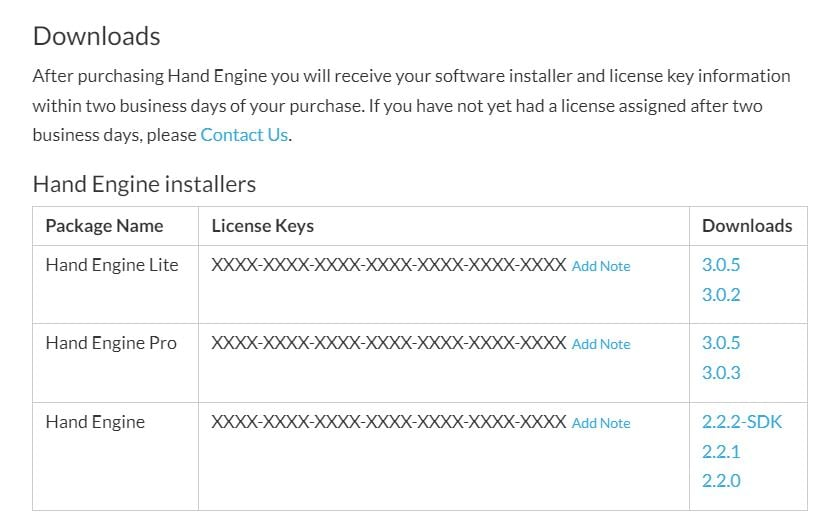
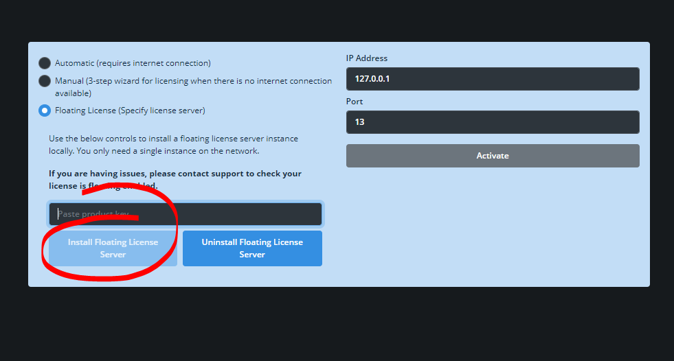
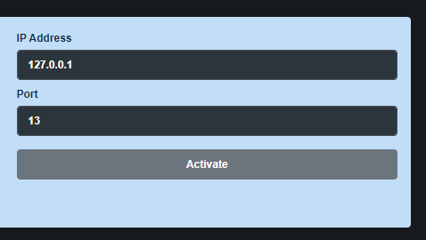

Requirements:
- Active internet connection at all times.
- Your hand Engine license key, which can be obtained from your account on StretchSense Downloads. If you do not already have an account or your license key is not in your account you can contact our Support team at support@stretchsense.com.

Floating License Server Install and License Activation
With the Floating License, you must first install the Floating Server on a computer on your network. Once it has been installed and activated, the server has a “pool” of “license leases” (i.e., the maximum number of instances of your app that can run at any given time, Hand Engine can only run 1 instance at a time). Then you can install Hand Engine on as many computers as you want.
This also works over a VPN, so if you have other locations that require access to the Hand Engine license, you can point them towards the floating license server as long as they are on the same VPN network.
When you launch Hand Engine, the following happens:
- Hand Engine tries to connect to the Floating Server installed on the network. If Hand Engine can successfully connect to the Floating Server, it requests a “license lease” from the Floating Server instance. One of two things will happen:
a) If there's 1 “license lease” left in the “pool” then Hand Engine will get that “license lease”.
b)If there are 0 “license leases” left in the “pool” then Hand Engine will not be able to start.
- When you close Hand Engine, it releases that “license lease” back into the “pool” so that it can be used by other users in that network.
In Hand Engine, paste your license key into the appropriate box and click on 'Install floating license server here'

A command prompt window will open and Windows will request admin access twice during the installation.
Once the process is complete click on Activate to finish the activation process and open Hand Engine on the server PC.
When you close Hand Engine, the license lease will be released back to the server and available for another PC to open Hand Engine.

The floating license server is now installed on this PC.
TIP:
On any other PC that you wish to activate the floating license:
- Select the floating license at the license activation page of Hand Engine.
- Enter the license key.
- Enter the IP address of the PC running the floating license server.
- Leave the port as default (13).
- Click on Activate.